← 返回阅读库 · 原论文目录
论文讲解阅读文档 · 论文精读 · v249
李飞飞团队最新图像编码器SOTA：Flow to the Mode
视频时长 00:21:19；讲解文字 6,940 字符；提取讲解画面 89 张。按视频原顺序阅读，每段文字保留时间戳。
文字来自整段视频的自动语音转写，按自然停顿分段，并与 PPT / 论文页面 / 演示画面对齐。未将讲解压缩为摘要；术语、数字和口述公式请结合画面及原论文核对。 阅读稿已校正规范部分明确术语误识别；原始逐字稿和每处修改记录另行保留。
讲解画面为源视频截图（640×360），不是可编辑 PPT 文件。全片按每秒 2 帧扫描内容变化，逐步展开页保留；连续动画保留代表画面。清晰度受源视频限制。
下载完整资料包 · 含离线 HTML、PDF、Word、全部 PPT 画面和字幕。
原论文与材料
Flow to the Mode: Mode-Seeking Diffusion Autoencoders for State-of-the-Art Image Tokenization · 下载完整 PDF（19 页）
按时间阅读
00:00:00–00:00:04 · 画面 001
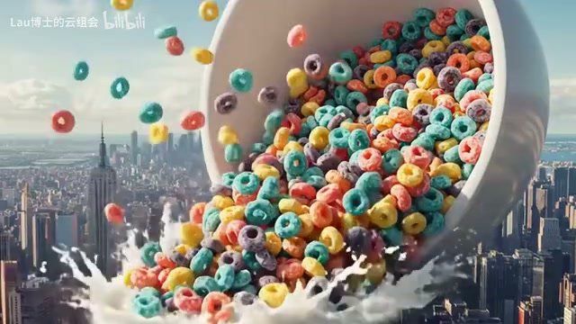
00:00:00–00:00:04 · 画面 00100:00:04–00:00:08 · 画面 002
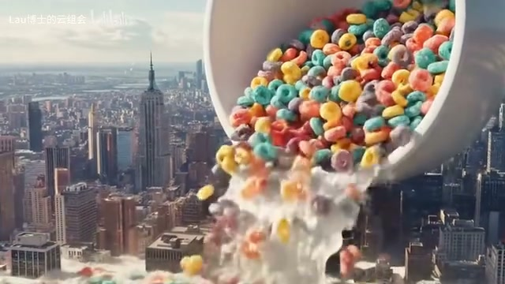
00:00:04–00:00:08 · 画面 00200:00:08–00:00:12 · 画面 003
00:00:08–00:00:12 · 画面 00300:00:12–00:00:14 · 画面 004
00:00:12–00:00:14 · 画面 004过去半年我们都被 AI 生成技术疯狂刷屏，Sova 的逼真视频，Stable Diffusion 的创意爆炸，Dali3 的精准理解。那这些 AI 神器的核心秘密呢，都包括同一个关键的技术，图像编码。这呢就引出我们今天要分享的论文，李飞飞的团队最新的力作，目前的扩散模型图像的 Tokenization 的 SOTA、FlowMo
00:00:14–00:00:18 · 画面 005
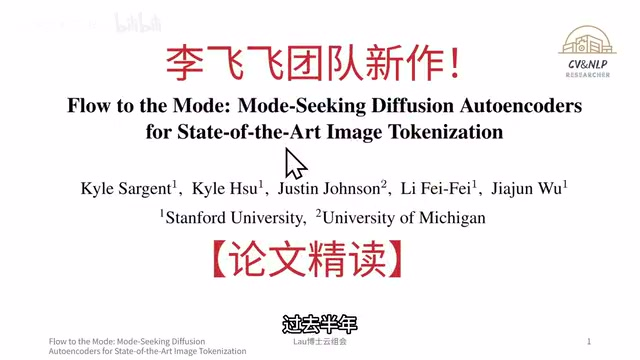
00:00:14–00:00:18 · 画面 00500:00:18–00:00:22 · 画面 006
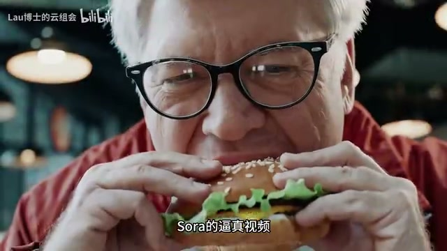
00:00:18–00:00:22 · 画面 00600:00:22–00:00:26 · 画面 007
00:00:22–00:00:26 · 画面 00700:00:26–00:00:27 · 画面 008
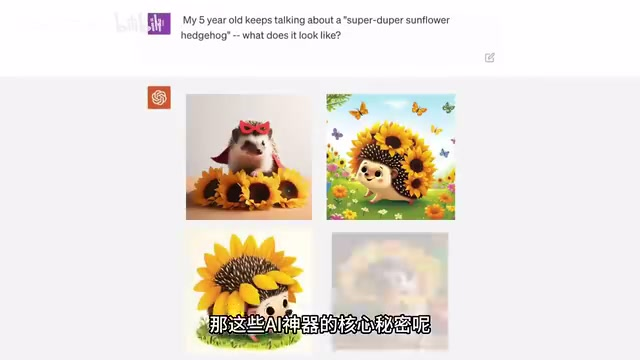
00:00:26–00:00:27 · 画面 00800:00:27–00:00:30 · 画面 009
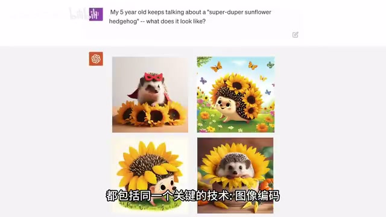
00:00:27–00:00:30 · 画面 00900:00:30–00:00:39 · 画面 010
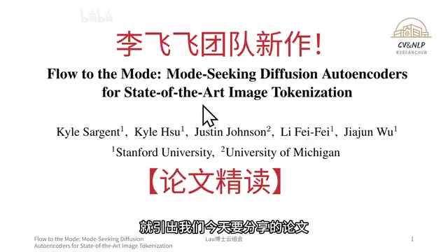
00:00:30–00:00:39 · 画面 01000:00:39–00:00:40 · 画面 011
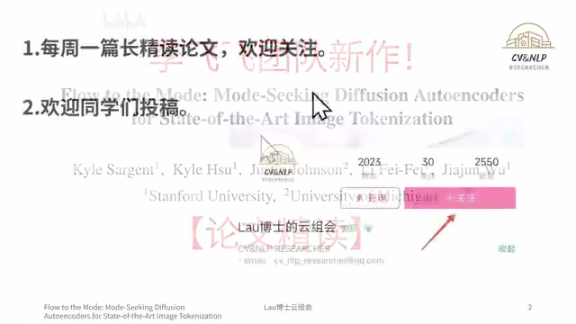
00:00:39–00:00:40 · 画面 011欢迎来到六博士的云组会，本期呢是我们的论文精读系列的第七期，非常感谢大家的支持。我们每周呢都将有至少一篇的高质量论文精读发布出来，让各位同学每周都有新的论文可以交流。欢迎关注我们成为云组会的一员。首先我们一起来看一下主创团队，那李飞飞呢，吴家骏啊，这些都是大佬中的大佬，可见了这篇文章的背书非常的强悍。那这篇文章呢，除了 Justin Johnson。
00:00:40–00:00:57 · 画面 012
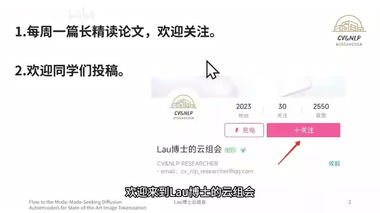
00:00:40–00:00:57 · 画面 01200:00:57–00:01:01 · 画面 013
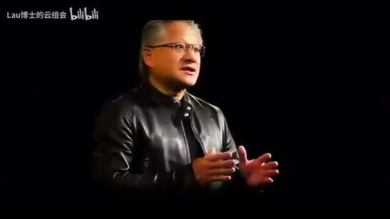
00:00:57–00:01:01 · 画面 01300:01:01–00:01:03 · 画面 014
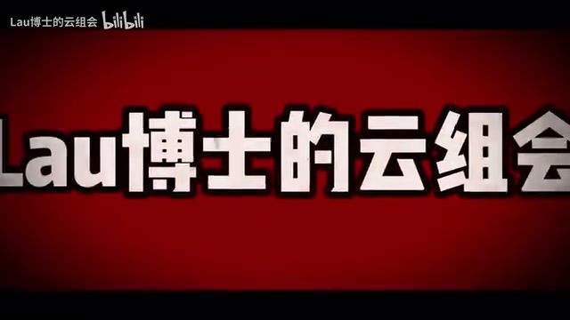
00:01:01–00:01:03 · 画面 01400:01:03–00:01:06 · 画面 015
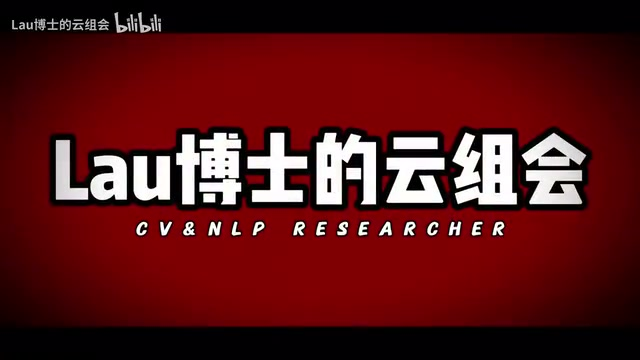
00:01:03–00:01:06 · 画面 01500:01:06–00:01:14 · 画面 016
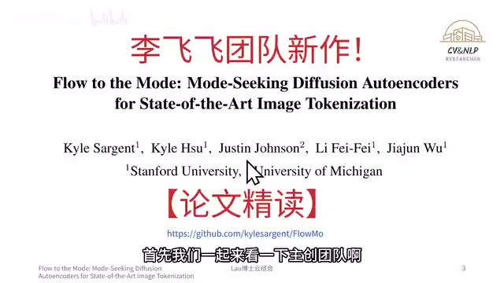
00:01:06–00:01:14 · 画面 01600:01:14–00:01:16 · 画面 017
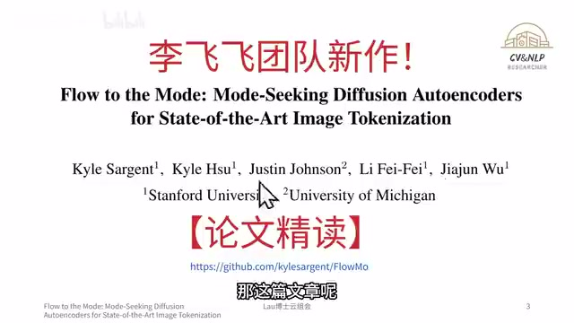
00:01:14–00:01:16 · 画面 01700:01:16–00:01:21 · 画面 018
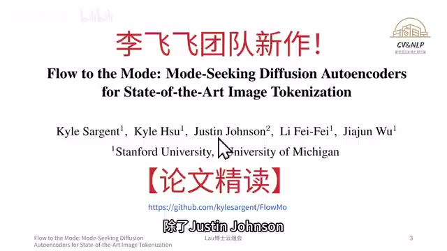
00:01:16–00:01:21 · 画面 018他来自于密歇根大学。其他人均来自于斯坦福。目前 FlowMo 的代码已经开源了。
00:01:21–00:01:24 · 画面 019
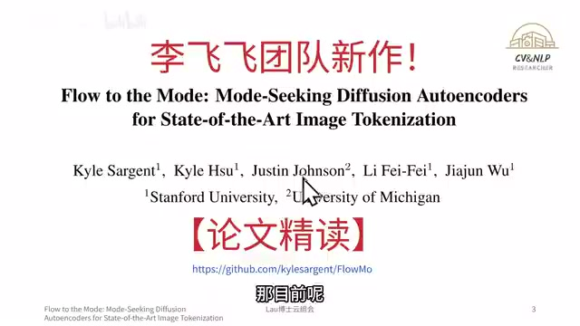
00:01:21–00:01:24 · 画面 019动手能力强的同学。
00:01:24–00:01:25 · 画面 020
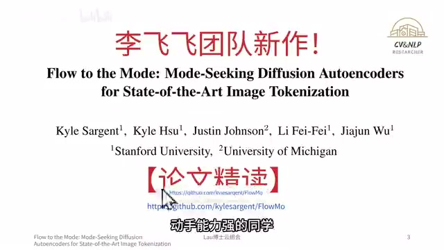
00:01:24–00:01:25 · 画面 020在开完这期组会以后。
00:01:25–00:01:30 · 画面 021
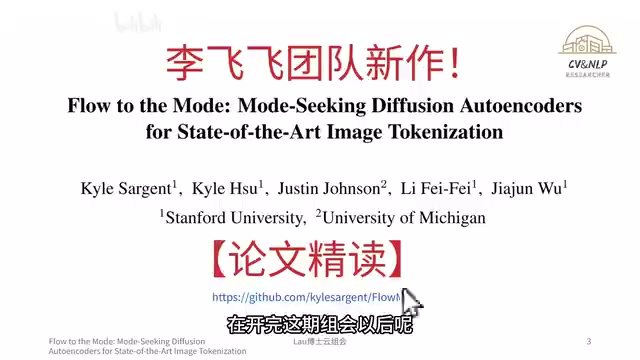
00:01:25–00:01:30 · 画面 021马上就可以去实现一下。看一下真实的效果到底如何。
00:01:30–00:01:31 · 画面 022
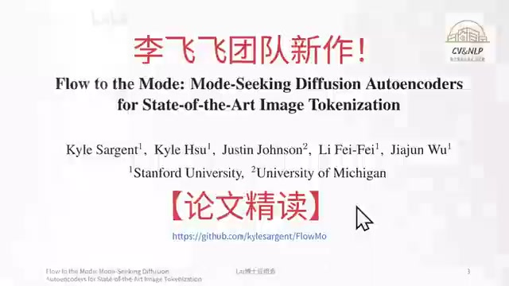
00:01:30–00:01:31 · 画面 022这个是我们的目录大纲。
00:01:31–00:01:32 · 画面 023
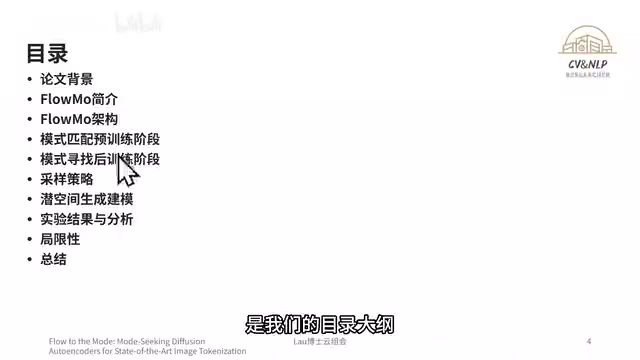
00:01:31–00:01:32 · 画面 02300:01:32–00:02:01 · 画面 024
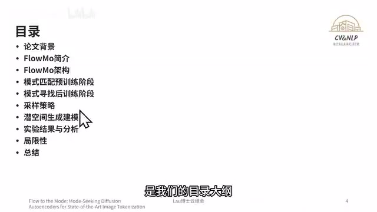
00:01:32–00:02:01 · 画面 024这篇文章我们会以一个总分种的结构。来跟大家一起分享。首先我们会从结构的背景。以及它的框架去做一些总览上的一个介绍。接下来会深入到它的两阶段的一个策略。以及它的建模还有它的实验结果。以及它有什么样的一个局限性。最后会对它进行一个全面的总结以及点评。
00:02:01–00:02:02 · 画面 025
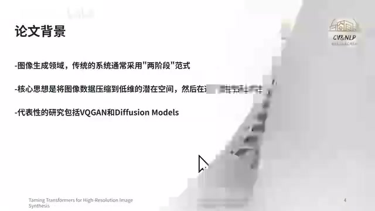
00:02:01–00:02:02 · 画面 025在图像生成领域
00:02:02–00:02:33 · 画面 026
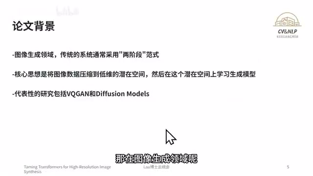
00:02:02–00:02:33 · 画面 026传统的系统通常都是用两阶段的一个形式的。这样子的一种范式。它的核心思想是将图像的数据压缩到低维的潜在空间。然后在潜在的空间上面去学习。怎么样去生成模型。这个范式在图像生成领域。有着非常广泛的应用。其中具有代表性的研究。就包括 VQGAN 以及 Diffusion Model我们来一起看一下这两个例子。
00:02:33–00:02:34 · 画面 027
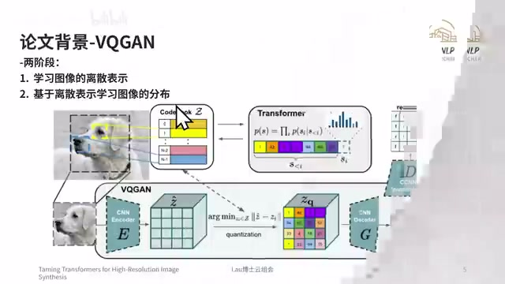
00:02:33–00:02:34 · 画面 027VQ GAM 是这种两阶段的范式的经典实现之一它就是通过编码器把图像压缩到 LISA 的一个潜在空间并且就通过解码器从潜在的空间里面把图片重构出来 VQ GAM 的核心就是使用了时量量化叫 VQ
00:02:34–00:03:08 · 画面 028
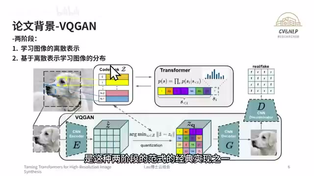
00:02:34–00:03:08 · 画面 028以及跟对抗生成网络电的结合从而实现了非常高质量的图像生成这种范式在图像生成图像压缩以及无监督学习等等的领域都有着非常广泛的应用接下来我们来看扩散模型它是另外一种的两阶段的范式的实现
00:03:08–00:03:09 · 画面 029
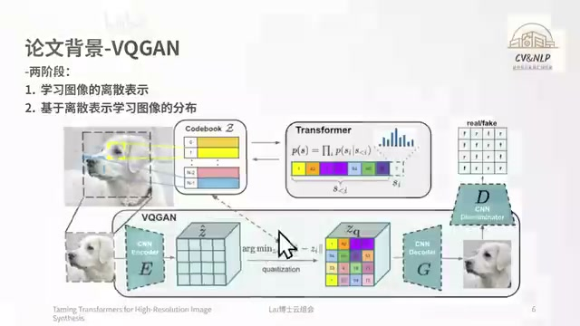
00:03:08–00:03:09 · 画面 02900:03:09–00:04:46 · 画面 030
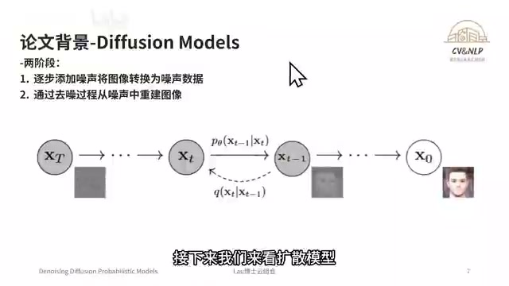
00:03:09–00:04:46 · 画面 030Diffusion Model 通过逐步的去添加噪声将图像转化成噪声的数据然后又通过一个去噪的过程去把图像从噪声当中重建出来扩散模型的核心就在于去噪过程当中去学习数据的分布从而实现高质量的图像生成扩散模型在图像生成风格迁移数据增强等等领域也取得非常好的一个效果那 VQGAN 跟扩散模型呢都是采用了两阶段的这种方式它们在实现的方式上呢有所不同那 VQGAN 呢是通过这种时量量化和生成对抗网络来结合生成图像那扩散的模型呢是通过去噪的这个过程来学习分布然后呢再从这个去噪的这个过程当中把图像复原出来那这两种方法呢在图像生成领域呢取得了非常大的成功那它们呢也有一些局限性那比如说呢 VQGAN 呢在训练的这个过程当中呢可能就会遇到一些稳定性的问题扩散模型呢可能在生成的过程当中呢需要多次的这种前向的这个传播导致了这种效率非常的低
那传统的这个两阶段的范式呢，还非常的依赖这个 CNN 跟这种对抗性的损失。那这些方法在处理大规模数据的时候啊，效率都比较低，也不好调餐。那么有没有一种更好的方法来解决这些问题呢？
00:04:46–00:04:47 · 画面 031
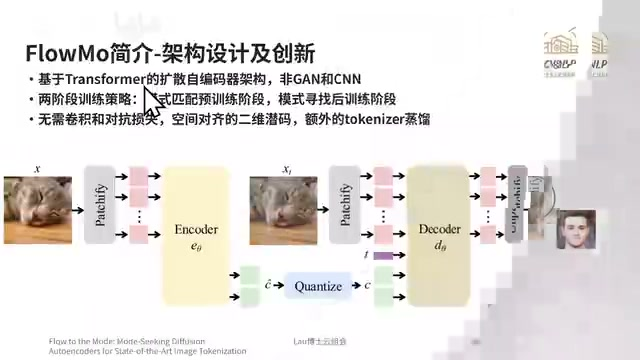
00:04:46–00:04:47 · 画面 031那现在呢，我们就引出我们今天的主角 Flumo。那 Flumo 的话呢，它是基于 Transformer 的一种扩散的自编码的一个架构，而不是呢传统的这种卷积神经网络 CNN 或是生成对抗网络 GAN。那 Transformer 的这个架构的优势呢，就是在处理这种大规模数据的时候呢，更加有效，也更好的去捕捉图像的这个全局特征。那另外呢，Transformer 呢，在这个硬件效率方面和可拓展方面呢，也有更大的这个优势。
00:04:47–00:05:19 · 画面 032
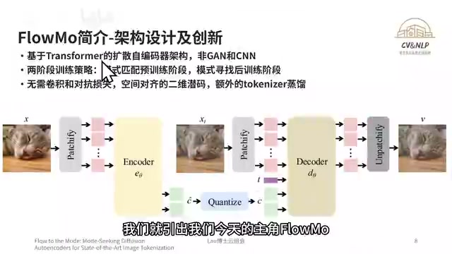
00:04:47–00:05:19 · 画面 032那跟前面提到的两个工作类似啊，Fullmo 的话呢，它也是一个连接段的训练策略。那前面的这一个呢，叫模式匹配的预训练阶段，另外一个呢，叫模式寻找后训练的阶段。我们来看一下它们都大致上长什么样的样子。那这个呢，就是模式匹配的预训练阶段。那在文章里面呢，它又被叫做 Stage 1A 的一个过程。
00:05:19–00:05:24 · 画面 033
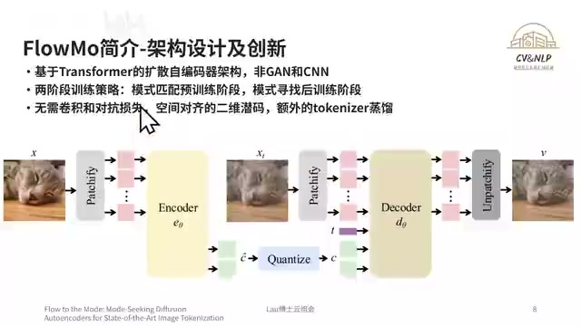
00:05:19–00:05:24 · 画面 03300:05:24–00:05:34 · 画面 034
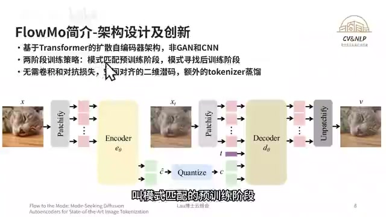
00:05:24–00:05:34 · 画面 03400:05:34–00:05:46 · 画面 035
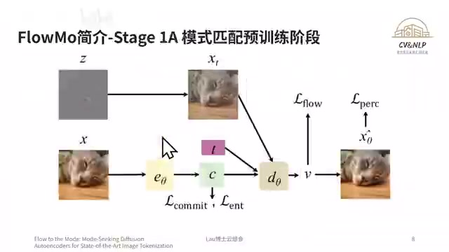
00:05:34–00:05:46 · 画面 035在这个阶段，编码器跟解码器会被联合训练，确保的前变量能够尽可能的保留更多关于图像的信息。另外一个阶段也叫 Stage 1B，在原文里面的表示模式寻找后训练的阶段。这个阶段解码器会被进一步的优化，以生成了感知上更接近原始图像的一个模式。
00:05:46–00:05:48 · 画面 036
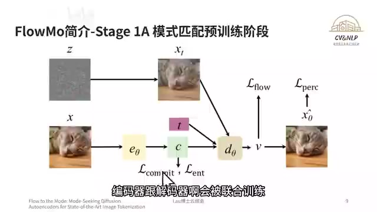
00:05:46–00:05:48 · 画面 03600:05:48–00:05:53 · 画面 037
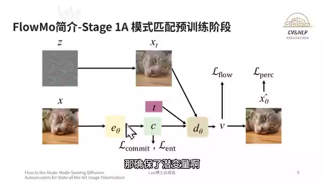
00:05:48–00:05:53 · 画面 03700:05:53–00:06:23 · 画面 038
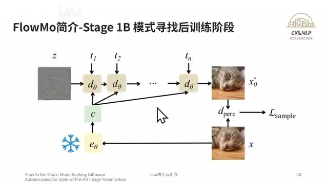
00:05:53–00:06:23 · 画面 038那这两种阶段的训练策略呢能够让 FlowMo 呢在保持高质量图像生成的同时呢也能优化这个前变量的表示从而呢在多个压缩率下呢都取得了非常不错的成绩那在介绍完两阶段的这个训练策略呢我们重新回到这个 FlowMo 的这个框架那 FlowMo 呢它是无需卷积和对抗损失也无需这个空间对齐的二维签码
00:06:23–00:06:24 · 画面 039
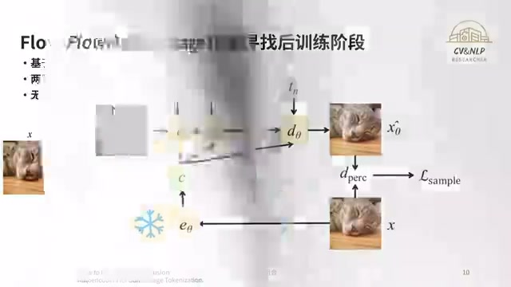
00:06:23–00:06:24 · 画面 03900:06:24–00:06:30 · 画面 040
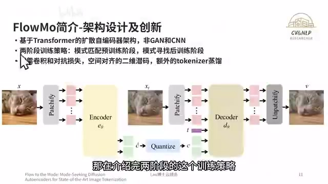
00:06:24–00:06:30 · 画面 04000:06:30–00:07:46 · 画面 041
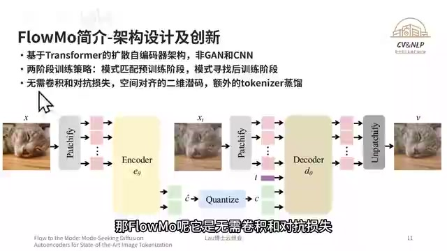
00:06:30–00:07:46 · 画面 041更无需这个额外的 tokenize 的这种帧流。那传统的这种图像生成的模型通常会由于这种卷积操作和对抗损失，那这些方法在训练的这个过程当中可能会遇到稳定性的这个问题，并且需要比较复杂的调参。那 FlowMo 通过这种创新的扩散自编码的这个结构避免了这个问题，使得在这个训练的这个过程当中能够更加的稳定和搞笑。那传统的这个图像生成模型啊，通常会依赖这个二维钱码，那这些钱码呢在空间上呢跟这个输入图像对齐，那 FlowMo 的话呢它通过一维的这种钱码，简化了这个模型的结构，提高了计算效率
同时呢又保证了这个高质量的图像生成的能力，那传统的这个图像生成的模型啊，通常也会依赖了从预训练的这种 tokenize 中，去做增留那这样子的话呢无疑啊就会增加了这种训练的这种复杂性跟依赖性，那 FlowMo 呢就没有这个过程能够呢独立的学习高质量的前辈量表示，也减少了对这种预训练的 tokenize 的依赖，
00:07:46–00:07:47 · 画面 042
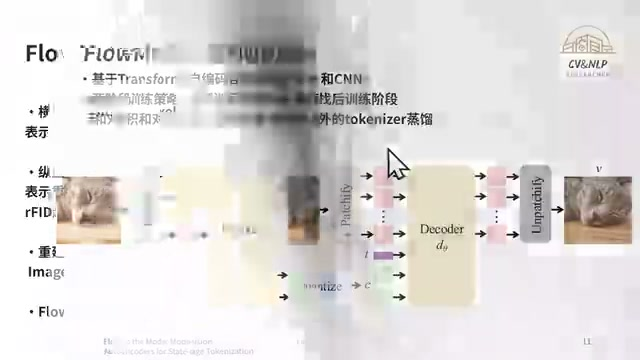
00:07:46–00:07:47 · 画面 042那我们在介绍结构的时候呢，
00:07:47–00:08:04 · 画面 043
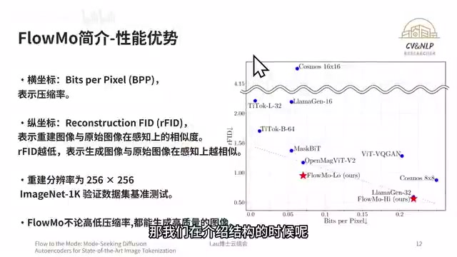
00:07:47–00:08:04 · 画面 043多次提到啊这个 FlowMo 有众多这个优势，那它的这个优势呢，到底是怎么样来体现的呢？那我们呢就一起来看一下这张图，那这张图呢我们首先呢要去了解一些坐标上面的一些，一些信息我们可以看到啊这里横坐标呢
00:08:04–00:08:07 · 画面 044
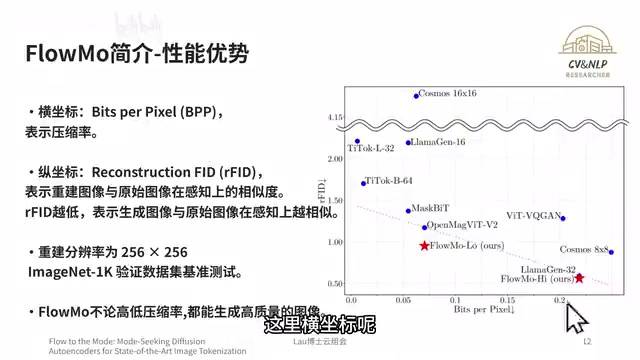
00:08:04–00:08:07 · 画面 044它是一个 by pm pixel它是一个压缩率的一个指标，
00:08:07–00:08:22 · 画面 045
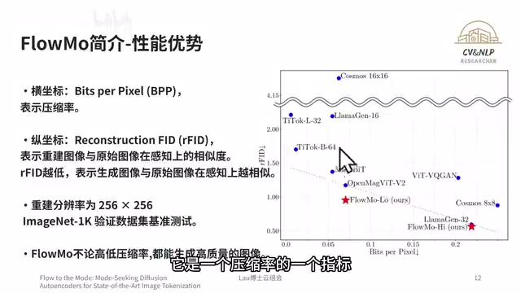
00:08:07–00:08:22 · 画面 045它的重坐标呢是这个rFID 这个 rFID 显阳就是一个距离上的一个度量，它是越小越好的。刚刚我们提到的横坐标也是同理，也是越小越好。这张图是在一个重建分辨率为 256x256 的 ImageNet 1K 的这个验证数据集下面做的一个基准的一个测试。
00:08:22–00:08:25 · 画面 046
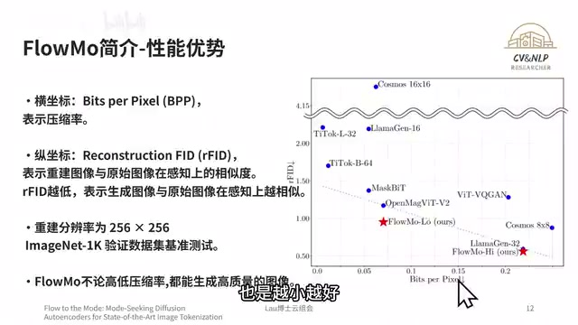
00:08:22–00:08:25 · 画面 04600:08:25–00:08:40 · 画面 047
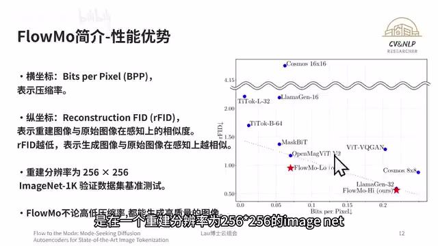
00:08:25–00:08:40 · 画面 047那我们可以看得到这个打星星的呢，就是本次的这个主角 Flumo。那这个 LO 的意思呢，就是低这个 bits per pixel 的意思。那这个 HI 也就是 high 是高的这个 bits per pixel 的一个意思。那我们可以看到啊，在这个图里面呢，因为两个指标都是越小越好，意味着呢，越靠近这个原点呢，它的效果就越好。
00:08:40–00:08:42 · 画面 048
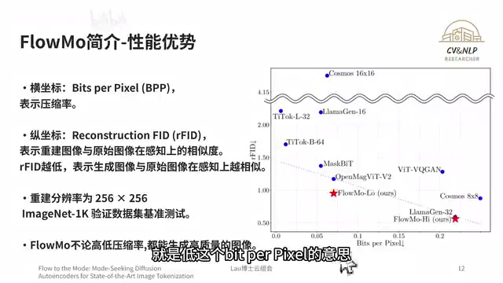
00:08:40–00:08:42 · 画面 04800:08:42–00:08:43 · 画面 049
00:08:42–00:08:43 · 画面 04900:08:43–00:08:48 · 画面 050
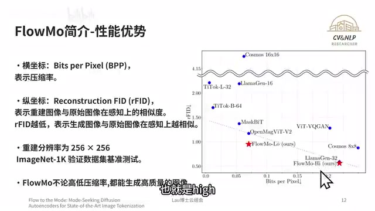
00:08:43–00:08:48 · 画面 05000:08:48–00:08:53 · 画面 051
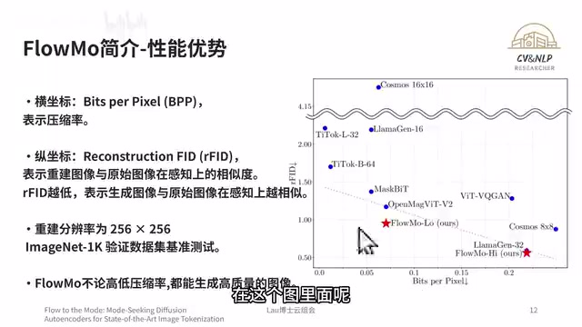
00:08:48–00:08:53 · 画面 05100:08:53–00:08:56 · 画面 052
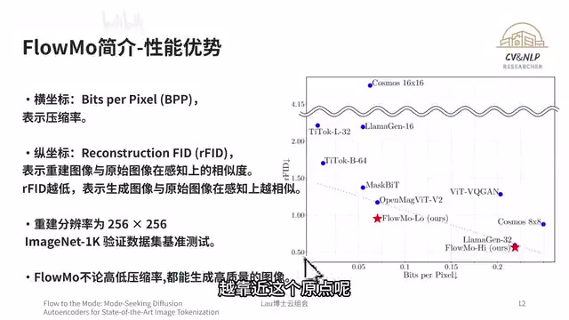
00:08:53–00:08:56 · 画面 052我们可以看到，无论是这个 FlowMo 是在一个 low bits per pixel 的情况下，还是在一个 high bits per pixel 的情况下，它都取得了非常好的一个成绩。这也表明这个 FlowMo 在不同的压缩率下都能够取得最佳的这种感知资料
00:08:56–00:09:00 · 画面 053
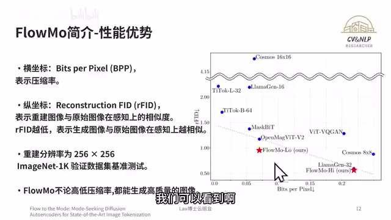
00:08:56–00:09:00 · 画面 05300:09:00–00:09:04 · 画面 054
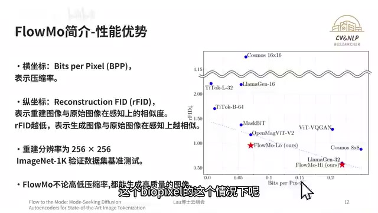
00:09:00–00:09:04 · 画面 05400:09:04–00:09:15 · 画面 055
00:09:04–00:09:15 · 画面 05500:09:15–00:09:16 · 画面 056
00:09:15–00:09:16 · 画面 056那我们知道这个 FlowMo 非常有这个优势以后呢，我们来进入到详细的这个 FlowMo 的架构的讲解。那这个 FlowMo 呢，它是一个基于 Transformer 的一个扩散制编码器，由编码器跟解码器两个部分组成。编码器呢，就是将输入图像编码为量化后的潜码。那解码器呢，就是从这个造成当中呢，逐步的去重建生成这个图像。
00:09:16–00:10:29 · 画面 057
00:09:16–00:10:29 · 画面 057那编码器呢是将输入的这个图像 X 呢编码成量化后的这个潜码 C。那具体来说呢那就是编码器 EC 塔呢会将这个图像 X 和初始的潜码 C0 映射到这个潜码空间生成这个连续的这个潜码 Chead。然后呢会通过这个量化操作啊把这个 Chead 呢转化成离散的这个潜码 C。解码器它是一个条件的扩散模型，从噪声的 xt 逐渐的去生成一个重建的图像。具体来说，解码器 DC 塔会学习从噪声 xt 以及解码器来生成 v，从而逐步的去减少噪声生成高质量的图像。
00:10:29–00:10:30 · 画面 058
00:10:29–00:10:30 · 画面 058刚看完这个 FlowMo 的整体的这个详细的架构以后呢，我们来看这个至关重要的两阶段的一个训练的一个策略。那首先呢我们来看这个 Stage1a 的这个模式匹配预训练的这个阶段。那这个阶段呢它的目标呢是训练这个编码器跟解码器，使得呢这个潜变量啊尽可能多的包含关于图像的这个信息。那
00:10:30–00:11:02 · 画面 059
00:10:30–00:11:02 · 画面 059使得重建的分布尽量的去接近真实分布，在这里会用到一些损失函数，包括流匹配的损失，包括感知损失，包括熵损失，还有承诺损失。这些损失函数都能够让 FlowMo 学习到更高质量的潜变量的表示
00:11:02–00:11:04 · 画面 060
00:11:02–00:11:04 · 画面 06000:11:04–00:11:06 · 画面 061
00:11:04–00:11:06 · 画面 06100:11:06–00:11:33 · 画面 062
00:11:06–00:11:33 · 画面 062那这一步的编码器呢将这个输入图像编码为量化后的这个潜码，解码器呢就从这个噪声当中逐步的去生成重建的这个图像。通过联合训练那 FlowMo 呢就能够生成高质量的这个重建图像。那紧接的呢就是 Stage 1B 了。Stage 1B 呢它的这个目标啊就是优化这个解码器，使得呢生成的这个图像在感知上呢更加去接近这个原始图像。
00:11:33–00:11:34 · 画面 063
00:11:33–00:11:34 · 画面 06300:11:34–00:11:55 · 画面 064
00:11:34–00:11:55 · 画面 064这个阶段它就会通过选择性的丢去跟原始图像感知上不接近的模式来实现。在这里的话，编码器就会被冻结，不再做更新。编码器的作用它主要是将输入图像的编码量化成潜码。这些潜码将会被用来条件化成解码器。
00:11:55–00:12:02 · 画面 065
00:11:55–00:12:02 · 画面 06500:12:02–00:12:10 · 画面 066
00:12:02–00:12:10 · 画面 066那冻结这个解码器就可以确保这个潜码的这个稳定性。那为这个解码器的这种优化呢提供了基础。那在这里呢会用这个 Lsample 来优化这个解码器。那通过这个感知损失的这个 Deprec 来评估生成图像跟这个原始的这个图像的一个相似度。通过优化这个 Lsample 呢那解码器啊它就能够生成在感知上更接近原始图像的一个模式。
00:12:10–00:12:14 · 画面 067
00:12:10–00:12:14 · 画面 06700:12:14–00:12:24 · 画面 068
00:12:14–00:12:24 · 画面 06800:12:24–00:12:26 · 画面 069
00:12:24–00:12:26 · 画面 06900:12:26–00:13:12 · 画面 070
00:12:26–00:13:12 · 画面 070那在每个这个时间步的 TI 上面呢，那是用这个更新函数 DTI 逐步的来减少这个噪声。那具体来说呢，那就是 DTI-XT 呢它表示呢在这个时间步 DI 上面的产样的更新，逐步的去减少噪声生成这个高质量的图像。那通过这个 backpropagation 呢也就是这个反向传播呢来优化这个解码器，那就是呢从这个噪声呢xt 开始逐步的去减少这个噪声生成这个高质量的这个图像。那除了我们刚刚提到的两个阶段以外呢，还有一个非常重要的叫采样策略。那在刚刚我们也介绍到了那通过了优化采样的这个策略呢来提高这个图像的一个质量，也就是这一条公式。
00:13:12–00:13:51 · 画面 071
00:13:12–00:13:51 · 画面 071通过这个逐步的去减少这个噪声呢能够让这个解码器啊去在生成感知上更接近原图的一个模式。那另外一个重要的地方呢就是这个通过调整时间的这个不长的 Row 来优化整个的采样的一个过程。那通过调整这个 Row 呢就可以集中的去采样不长在低噪声的这个水平从而提升这个生成图像的一个质量。那到了这里的话呢，Stage1 呢就所有的流程都走完了。那实际上刚刚的 Stage1 里面提到的这个 AB 的这两个过程呢，它对应到的是这个我们在最前面介绍背景 VQGAN 还有这个 DDPM 的两个阶段。那到了这个呢 Stage2 呢，实际上是在讲另外一个事情。
00:13:51–00:14:49 · 画面 072
00:13:51–00:14:49 · 画面 072Stage2 它是要用来去验证 URL 的这个潜变量在图像生成的这个任务的有效性。通过了这些训练来看一下到底是怎么样子的一个性能。在这里的话，作者选择了这个 MaskGIT 来作为这个生成模型。MaskGIT 它也是一个这种 G-Transformer 的一个自回归的模型。那在这种优化后的这个前边链的训练的这种生成模型，相信呢它就是能够生成一个高质量的这种图像。那这个我们现在展示的这个呢是图文章里面的这个 fig2，这就是图 2。可以看到这个 flu mode 呢跟其他的一些对比。那实际上在这个视觉的这种指标上，我认为呢最后的这个图呢是效果最接近原图的。
00:14:49–00:14:50 · 画面 073
00:14:49–00:14:50 · 画面 07300:14:50–00:14:57 · 画面 074
00:14:50–00:14:57 · 画面 07400:14:57–00:15:04 · 画面 075
00:14:57–00:15:04 · 画面 07500:15:04–00:15:52 · 画面 076
00:15:04–00:15:52 · 画面 076那反映在这个指标上呢，实际上也是有类似的这个效果。我们可以看到前面这个几个的话呢，他们在这个英文字母上，尤其呢是这个 openmac 这个 vit v2 这个的效果是最不好的。这个 hotel 几个字是没看得清楚。那即便是 FlowMo 的这个 low 呢，那当然它是因为是一个比较低的一个压缩率啊。那可以看到也并不是效果有那么好啊。那相反的这个 LlamaGen 在这个 Hotel 的这个字上面的生成的效果非常的好。那另外那个是在这个人脸上，这个 OpenMag VIT 的这个人脸呢，它是有一点糊掉了。然后呢其他三个看着呢，还算是比较正常的。
00:15:52–00:15:53 · 画面 077
00:15:52–00:15:53 · 画面 077那我们刚刚看完可视化，我们一起来看一下这个标记化性能的一个对比。那无论是这个低压缩率还是这个高压缩率，这个 FlowMo 它的效果呢，在这个 rFID PSNR SSIM 三个指标里面它都是比较领先的。在同等的这个条件下面，那我们可以看得到，即便是这个 LP IPS 略有这个颓势，但实际上相差的并不多。
00:15:53–00:16:22 · 画面 078
00:15:53–00:16:22 · 画面 078那所以呢，这个依旧是一个非常有 powerful 的一个成绩。那接下来我们来看一下这个生成性能的对比，以及跟这个 DITO 的一个对比。我们可以看得到啊，跟
00:16:22–00:16:23 · 画面 079
00:16:22–00:16:23 · 画面 07900:16:23–00:16:54 · 画面 080
00:16:23–00:16:54 · 画面 080这个 OpenMagViT-V2 来比在 IS SFID PIEC 这个 FlowMo 都是有相对大的这种领先的优势当然在 FID 的话稍有落后但在 IEC 上这个差距并不明显然后我们来看到实地的这个可视化上在可视化上我们主要是看到有两幅图是
00:16:54–00:17:00 · 画面 081
00:16:54–00:17:00 · 画面 081这个 FlowMo 是比较有优势的一个是这个狗。这个狗的话，这里这个 OpenMagViT-V2 它生成出来的已经
00:17:00–00:17:29 · 画面 082
00:17:00–00:17:29 · 画面 082不是那么符合这个语义。那相反这个狗是正常的。然后是这个水上面的一个喷水或是一个烟花的一个场景。那很明显这个 OpenMagViT-V2 生成这个结果并不那么符合这个语义，看起来像是一个爆炸这样子的一个场景。那下面的这个才是符合我们一般理解上的这个水里面的这种喷水或是烟花的一个场景。那在这个 DITO 里面呢，这个 FlowMo 它更是全面占有
00:17:29–00:17:33 · 画面 083
00:17:29–00:17:33 · 画面 083再有了，我们就来看这个消音实验的一个影响。那 StableEB 跟 StableEA 这个加的东西跟不加它有什么样的一个影响。先看这个 StableEB。那这个 StableEB 发现用了这个 Post-train 以后呢，它的这个性能不论是在这个低的这个压缩率还是在高的这个压缩率都是有全面的提升。说明了这个 Post-train 是非常重要的。
00:17:33–00:18:44 · 画面 084
00:17:33–00:18:44 · 画面 084再有了我们来看 StageEAStageEA 也是说明了它是加点东西还有就是丢掉原来的东西我们可以看到 Weave 上去以后实际上很多都会有不同程度的降低尤其是 rFID 在没有感知损失以后它是掉得非常厉害的又再有了加点 Double 的 patch size、rFID 它也是会下降的比较厉害说明这个 EBEA 都是经过这个精心的一个设计。然后这里呢提到了一个叫 logit-normal 的这个 noise，就是这个噪声呢，它就会导致说这个重建的时候呢，会导致这个画面它会引起一些失真或者说是变色。那这个工作呢，它是不是真的这么完美无缺呢？实际上的这个作者呢，他也有在文章里面的去做了一些讨论。
00:18:44–00:18:45 · 画面 085
00:18:44–00:18:45 · 画面 08500:18:45–00:19:36 · 画面 086
00:18:45–00:19:36 · 画面 086那这里的话呢，实际上虽然说啊，他用的是这个 Transformer 的一个架构，但对于如果真的是要去试验或是做这篇文章的这个实验，这个需求并不低啊。这篇文章这个作者呢，他提到了他们的这个很多人用的这个卡组啊，都是 A6000L40S A100 H100H200 这种级别的 GPU。那另外有一个其中一个过程呢，更是用了 8 张的这个 H100 可见了要复现他这个并不容易啊。再有呢，这个是作者呢，在这个 Limitation 里面提到的这个 FlowMo 啊，它是需要多次的这个模型的前线传播来生成样本的。那说明了这个推理的时间呢，实际上会比较长。最后我们来总结啊，实际上呢，这个地方呢，也就是文章的这个 Conclusion 的一个部分。那这篇文章呢，它是提出了一种基于 Transformer 的这种扩散的质别码器的一个结构，它不依赖于传统的这种卷积神经网络先或者是这种对抗损失。
00:19:36–00:21:16 · 画面 087
00:19:36–00:21:16 · 画面 087它引入了这种模式匹配的这种预训练跟模式寻找后的这个训练的两个过程，优化了这个潜在代码的表示以及解码器的这种生成的这种能力。那另外呢，这个在高的这个压缩率或者是低的这个压缩率呢，这个工作呢就取得了比较好的一个性能。那尤其呢是在这个 rFID 或是 PSNR 等等的这些方面。那最后呢来跟大家分享一个小小的一个片段。那在之前呢这篇文章我在第一次读的时候呢是在直播上进行的那那个时候就有一位同学啊在直播间提出了一个问题或者说他是提出了一种构思他说啊这个工作已经提到了它是主要是怎么去训练啊
得到一个比较好的一个 tokenizer那这些东西他能不能在后面呢去接一些各种各样的一个下位任务呢那如果能做到那相信呢才是体现这篇文章啊威力的一个地方那这篇文章呢它整体上呢它并没有去提到没有很具体的去提到这个视频生成它有提到这个多模态但实际上我看提到的也没有非常的 detail 啊但我比较期待的是能不能看到这个下位任务里面能够用这种训练的这个模式应用在这个视频生成那可能呢就是这篇文章对于放话性来讲比较大重大的一个贡献
00:21:16–00:21:17 · 画面 088
00:21:16–00:21:17 · 画面 08800:21:17–00:21:19 · 画面 089
00:21:17–00:21:19 · 画面 089转写与来源说明 · 0 个自动复核提示
保留 145 个原始语音片段，0 个片段触发自动复核提示。提示仅用于定位可能的术语、重复或识别问题，不等于已确认错误。
讲解画面为源视频截图（640×360），不是可编辑 PPT 文件。全片按每秒 2 帧扫描内容变化，逐步展开页保留；连续动画保留代表画面。清晰度受源视频限制。
原视频：paper/合集_2026-10-16_论文精读/李飞飞团队最新图像编码器SOTA：Flow to the Mode【论文精读】.mp4
SHA-256：8a0a67149471d42fd1fe392535f0204951844945fa277adc8ba967789c2b3e6e
全文按视频语音与画面制作。原论文可从上方链接下载；完整资料包保留全文、原始逐字稿、字幕和校对记录。